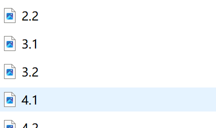
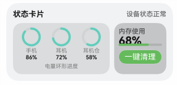

纯规则美学批量检测报告
30图片数量
41.54平均分
| 卡片 | 图片 | 总分 | 等级 | 可信度 | 维度分 | 详情报告 | 警告 |
|---|---|---|---|---|---|---|---|
| 1.1.png | 42.79 | D | 88.04% | 信息完整性：0.0 / 布局美学：50.6 / 视觉设计：54.2 / 设计一致性：57.6 | 查看详情 | 指标跳过：组件尺寸一致性：检测到的组件少于 2 个；指标跳过：图标尺寸一致性：检测到的图标少于 2 个；信息覆盖率为 0：DSL 中没有提取到必要展示文字。 | |
 | 1.2.png | 47.22 | D | 86.92% | 信息完整性：0.0 / 布局美学：50.5 / 视觉设计：60.1 / 设计一致性：73.5 | 查看详情 | 指标跳过：组件尺寸一致性：检测到的组件少于 2 个；指标跳过：图标尺寸一致性：检测到的图标少于 2 个；信息覆盖率为 0：DSL 中没有提取到必要展示文字。 |
| 1.3.png | 43.69 | D | 94.42% | 信息完整性：0.0 / 布局美学：42.1 / 视觉设计：56.4 / 设计一致性：75.3 | 查看详情 | 指标跳过：组件尺寸一致性：检测到的组件少于 2 个；指标跳过：图标尺寸一致性：检测到的图标少于 2 个；信息覆盖率为 0：DSL 中没有提取到必要展示文字。 | |
 | 10.png | 43.19 | D | 100.00% | 信息完整性：0.0 / 布局美学：41.8 / 视觉设计：59.4 / 设计一致性：65.7 | 查看详情 | 指标跳过：组件尺寸一致性：检测到的组件少于 2 个；指标跳过：内边距一致性：没有可估算文字内边距的组件；信息覆盖率为 0：DSL 中没有提取到必要展示文字。 |
 | 11.png | 38.52 | D | 58.75% | 信息完整性：0.0 / 布局美学：23.1 / 视觉设计：73.5 / 设计一致性：39.2 | 查看详情 | 信息覆盖率为 0：DSL 中没有提取到必要展示文字。 |
| 12.png | 42.04 | D | 95.76% | 信息完整性：0.0 / 布局美学：37.2 / 视觉设计：52.9 / 设计一致性：82.4 | 查看详情 | 指标跳过：组件尺寸一致性：检测到的组件少于 2 个；指标跳过：内边距一致性：没有可估算文字内边距的组件；信息覆盖率为 0：DSL 中没有提取到必要展示文字。 | |
 | 13.png | 21.24 | D | 76.19% | 信息完整性：0.0 / 布局美学：27.1 / 视觉设计：24.5 / 设计一致性：30.2 | 查看详情 | 指标跳过：内边距一致性：没有可估算文字内边距的组件；指标跳过：图标尺寸一致性：检测到的图标少于 2 个；指标跳过：间距节奏：可用垂直间距样本少于 2 个；另有 1 条 |
| 14.png | 37.38 | D | 76.19% | 信息完整性：0.0 / 布局美学：65.2 / 视觉设计：39.9 / 设计一致性：25.7 | 查看详情 | 指标跳过：内边距一致性：没有可估算文字内边距的组件；指标跳过：图标尺寸一致性：检测到的图标少于 2 个；指标跳过：间距节奏：可用垂直间距样本少于 2 个；另有 1 条 | |
 | 2.1.png | 34.37 | D | 97.93% | 信息完整性：0.0 / 布局美学：22.8 / 视觉设计：46.8 / 设计一致性：74.3 | 查看详情 | 指标跳过：组件尺寸一致性：检测到的组件少于 2 个；指标跳过：图标尺寸一致性：检测到的图标少于 2 个；信息覆盖率为 0：DSL 中没有提取到必要展示文字。 |
 | 2.2.png | 54.19 | D | 99.77% | 信息完整性：0.0 / 布局美学：65.2 / 视觉设计：71.8 / 设计一致性：63.5 | 查看详情 | 指标跳过：组件尺寸一致性：检测到的组件少于 2 个；指标跳过：圆角一致性：可用圆角样本少于 2 个；指标跳过：图标尺寸一致性：检测到的图标少于 2 个；另有 1 条 |
| 3.1.png | 32.60 | D | 98.33% | 信息完整性：0.0 / 布局美学：31.9 / 视觉设计：35.1 / 设计一致性：71.8 | 查看详情 | 指标跳过：组件尺寸一致性：检测到的组件少于 2 个；指标跳过：圆角一致性：可用圆角样本少于 2 个；指标跳过：内边距一致性：没有可估算文字内边距的组件；另有 2 条 | |
| 3.2.png | 31.97 | D | 98.45% | 信息完整性：0.0 / 布局美学：29.2 / 视觉设计：39.4 / 设计一致性：62.9 | 查看详情 | 指标跳过：组件尺寸一致性：检测到的组件少于 2 个；指标跳过：圆角一致性：可用圆角样本少于 2 个；指标跳过：内边距一致性：没有可估算文字内边距的组件；另有 2 条 | |
 | 4.1.png | 37.50 | D | 90.70% | 信息完整性：0.0 / 布局美学：26.9 / 视觉设计：53.0 / 设计一致性：72.4 | 查看详情 | 指标跳过：组件尺寸一致性：检测到的组件少于 2 个；指标跳过：圆角一致性：可用圆角样本少于 2 个；指标跳过：内边距一致性：没有可估算文字内边距的组件；另有 2 条 |
| 4.2.png | 41.15 | D | 90.99% | 信息完整性：0.0 / 布局美学：34.8 / 视觉设计：56.3 / 设计一致性：73.3 | 查看详情 | 指标跳过：组件尺寸一致性：检测到的组件少于 2 个；指标跳过：圆角一致性：可用圆角样本少于 2 个；指标跳过：内边距一致性：没有可估算文字内边距的组件；另有 2 条 | |
 | 5.1.png | 37.41 | D | 94.83% | 信息完整性：0.0 / 布局美学：25.2 / 视觉设计：53.3 / 设计一致性：74.6 | 查看详情 | 指标跳过：组件尺寸一致性：检测到的组件少于 2 个；指标跳过：圆角一致性：可用圆角样本少于 2 个；指标跳过：内边距一致性：没有可估算文字内边距的组件；另有 2 条 |
| 5.2.png | 49.16 | D | 99.39% | 信息完整性：0.0 / 布局美学：53.1 / 视觉设计：64.7 / 设计一致性：70.6 | 查看详情 | 指标跳过：图标尺寸一致性：检测到的图标少于 2 个；信息覆盖率为 0：DSL 中没有提取到必要展示文字。 | |
 | 6.1.png | 49.31 | D | 99.63% | 信息完整性：0.0 / 布局美学：47.8 / 视觉设计：69.8 / 设计一致性：70.1 | 查看详情 | 指标跳过：组件尺寸一致性：检测到的组件少于 2 个；指标跳过：图标尺寸一致性：检测到的图标少于 2 个；信息覆盖率为 0：DSL 中没有提取到必要展示文字。 |
| 6.2.png | 36.60 | D | 99.77% | 信息完整性：0.0 / 布局美学：31.2 / 视觉设计：51.7 / 设计一致性：61.0 | 查看详情 | 指标跳过：组件尺寸一致性：检测到的组件少于 2 个；指标跳过：圆角一致性：可用圆角样本少于 2 个；指标跳过：内边距一致性：没有可估算文字内边距的组件；另有 2 条 | |
| 7.1.png | 49.88 | D | 92.15% | 信息完整性：0.0 / 布局美学：62.0 / 视觉设计：57.1 / 设计一致性：75.3 | 查看详情 | 指标跳过：组件尺寸一致性：检测到的组件少于 2 个；指标跳过：图标尺寸一致性：检测到的图标少于 2 个；信息覆盖率为 0：DSL 中没有提取到必要展示文字。 | |
 | 7.2.png | 42.88 | D | 76.93% | 信息完整性：0.0 / 布局美学：47.1 / 视觉设计：59.6 / 设计一致性：52.4 | 查看详情 | 指标跳过：组件尺寸一致性：检测到的组件少于 2 个；指标跳过：图标尺寸一致性：检测到的图标少于 2 个；指标跳过：间距节奏：可用垂直间距样本少于 2 个；另有 1 条 |
| 8.1.png | 44.49 | D | 98.74% | 信息完整性：0.0 / 布局美学：31.1 / 视觉设计：64.7 / 设计一致性：83.4 | 查看详情 | 指标跳过：组件尺寸一致性：检测到的组件少于 2 个；指标跳过：图标尺寸一致性：检测到的图标少于 2 个；信息覆盖率为 0：DSL 中没有提取到必要展示文字。 | |
 | 8.2.png | 47.01 | D | 99.64% | 信息完整性：0.0 / 布局美学：41.5 / 视觉设计：65.3 / 设计一致性：78.0 | 查看详情 | 指标跳过：组件尺寸一致性：检测到的组件少于 2 个；指标跳过：图标尺寸一致性：检测到的图标少于 2 个；信息覆盖率为 0：DSL 中没有提取到必要展示文字。 |
 | 9.1.png | 52.75 | D | 98.53% | 信息完整性：0.0 / 布局美学：60.8 / 视觉设计：68.0 / 设计一致性：71.3 | 查看详情 | 指标跳过：组件尺寸一致性：检测到的组件少于 2 个；指标跳过：图标尺寸一致性：检测到的图标少于 2 个；信息覆盖率为 0：DSL 中没有提取到必要展示文字。 |
 | 9.2.png | 39.22 | D | 98.97% | 信息完整性：0.0 / 布局美学：28.4 / 视觉设计：59.2 / 设计一致性：66.5 | 查看详情 | 指标跳过：组件尺寸一致性：检测到的组件少于 2 个；指标跳过：圆角一致性：可用圆角样本少于 2 个；指标跳过：内边距一致性：没有可估算文字内边距的组件；另有 2 条 |
| q1_2.png | 50.01 | D | 98.15% | 信息完整性：0.0 / 布局美学：54.2 / 视觉设计：71.2 / 设计一致性：58.9 | 查看详情 | 指标跳过：组件尺寸一致性：检测到的组件少于 2 个；信息覆盖率为 0：DSL 中没有提取到必要展示文字。 | |
| q1_4.png | 47.36 | D | 95.23% | 信息完整性：0.0 / 布局美学：57.4 / 视觉设计：68.4 / 设计一致性：41.3 | 查看详情 | 指标跳过：组件尺寸一致性：检测到的组件少于 2 个；信息覆盖率为 0：DSL 中没有提取到必要展示文字。 | |
| q2_2.png | 47.86 | D | 99.41% | 信息完整性：0.0 / 布局美学：65.3 / 视觉设计：60.4 / 设计一致性：47.4 | 查看详情 | 指标跳过：组件尺寸一致性：检测到的组件少于 2 个；信息覆盖率为 0：DSL 中没有提取到必要展示文字。 | |
| q2_4.png | 39.30 | D | 99.74% | 信息完整性：0.0 / 布局美学：30.7 / 视觉设计：62.7 / 设计一致性：54.3 | 查看详情 | 指标跳过：组件尺寸一致性：检测到的组件少于 2 个；信息覆盖率为 0：DSL 中没有提取到必要展示文字。 | |
 | q3_2.png | 34.14 | D | 90.22% | 信息完整性：0.0 / 布局美学：28.0 / 视觉设计：56.7 / 设计一致性：39.2 | 查看详情 | 指标跳过：组件尺寸一致性：检测到的组件少于 2 个；信息覆盖率为 0：DSL 中没有提取到必要展示文字。 |
 | q3_4.png | 30.87 | D | 93.09% | 信息完整性：0.0 / 布局美学：26.4 / 视觉设计：49.5 / 设计一致性：37.4 | 查看详情 | 指标跳过：组件尺寸一致性：检测到的组件少于 2 个；信息覆盖率为 0：DSL 中没有提取到必要展示文字。 |